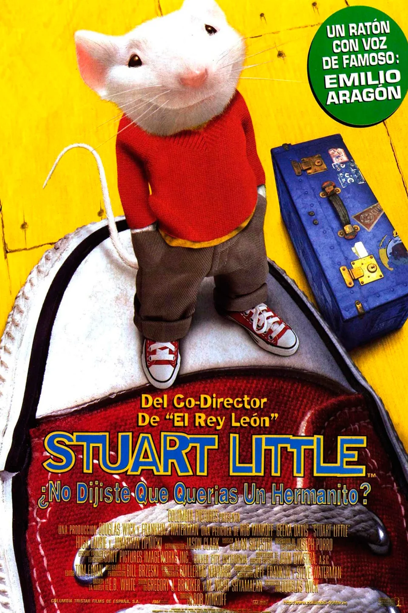
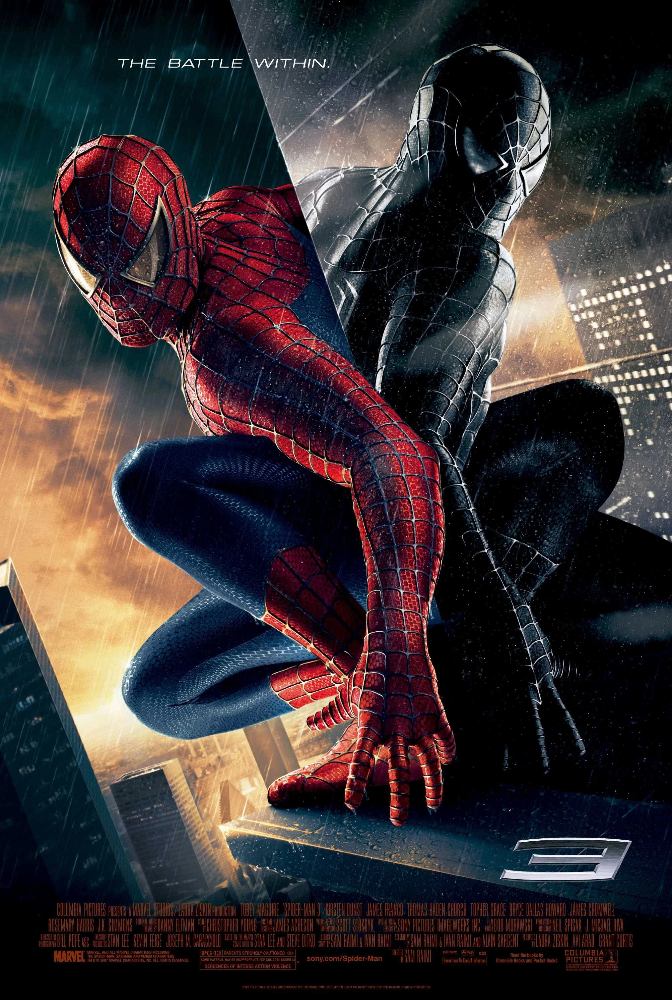
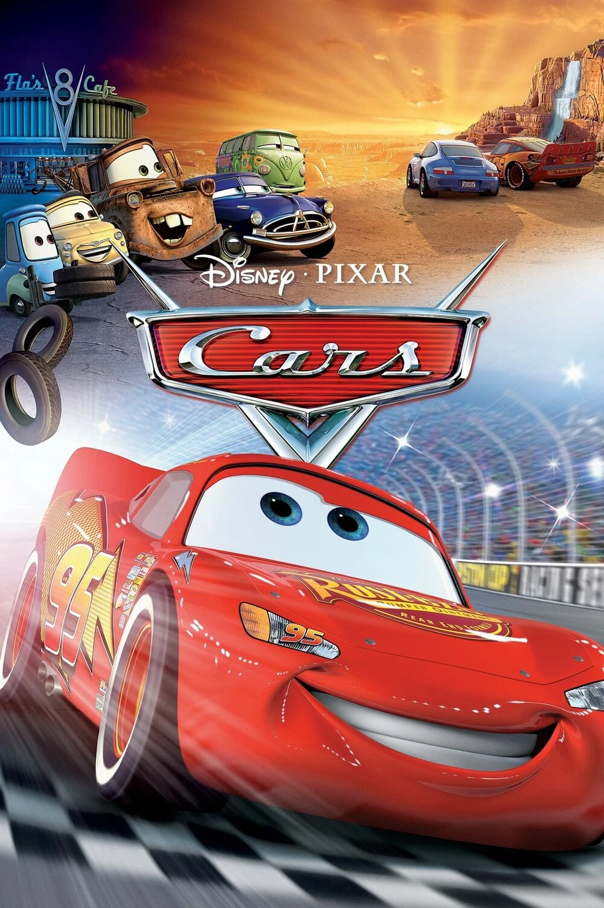
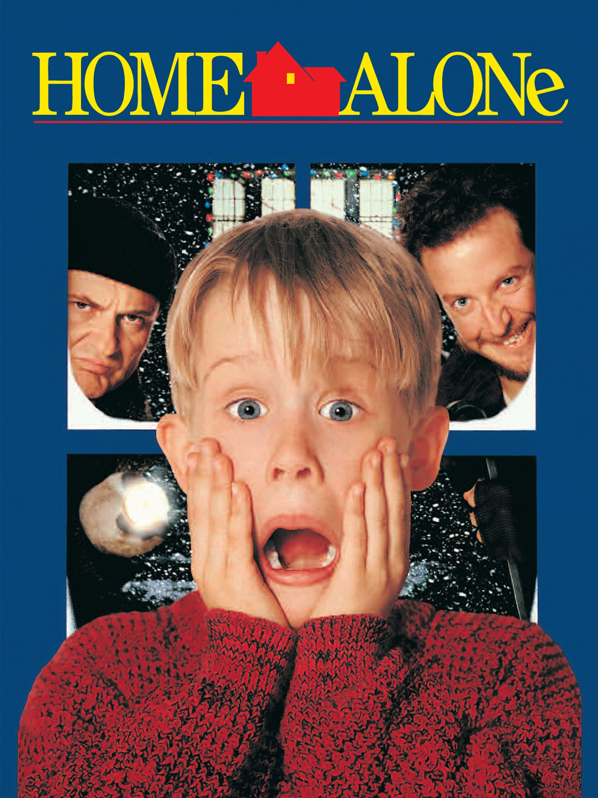

descripcion
stuart little
Stuart Little" es una película familiar que cuenta la historia de Stuart, un pequeño ratón que es adoptado por la familia Little. A pesar de su tamaño, Stuart es valiente y lleno de entusiasmo. Se enfrenta a varios desafíos, especialmente con Snowbell, el gato de la familia, que al principio lo ve como una amenaza. A medida que la historia avanza, Stuart busca encontrar su lugar en la familia y demostrar que, aunque es un ratón, puede ser un gran amigo y héroe. La película destaca la importancia de la amistad y la aceptación, sin importar las diferencias.
Spiderman
"Spider-Man 3" sigue a Peter Parker mientras enfrenta varios desafíos. Después de haber encontrado un nuevo equilibrio en su vida como superhéroe, se ve afectado por un extraño simbionte negro que amplifica su poder pero también su oscuridad. Esto provoca una lucha interna que lo aleja de sus amigos y de Mary Jane. Además, debe enfrentarse a nuevos enemigos: Sandman, que tiene la habilidad de transformarse en arena, y Venom, un antiguo compañero que busca venganza. La película explora temas de redención, perdón y las consecuencias de las decisiones personales.
Cars
"Cars" es una película animada que sigue a Lightning McQueen y su amigo Mater en una emocionante aventura internacional. Cuando McQueen es invitado a competir en la Copa del Mundo de carreras, Mater lo acompaña, pero se ve envuelto en un espionaje internacional. Mientras Lightning se centra en las carreras, Mater, inadvertidamente, se convierte en un agente secreto y debe ayudar a salvar el día. La película explora temas de amistad, lealtad y la importancia de ser uno mismo, todo en un colorido mundo de coches antropomorfos.
Mi probre angelito
"Mi pobre angelito" es una comedia familiar que sigue las aventuras de Kevin McCallister, un niño de ocho años que es accidentalmente dejado solo en casa cuando su familia se va de vacaciones. Al principio, disfruta de su libertad, pero pronto debe enfrentarse a dos ladrones que intentan robar su casa. Con ingenio y una serie de trampas ingeniosas, Kevin defiende su hogar y se convierte en un héroe, todo mientras aprende sobre la importancia de la familia y la amistad. Es una película llena de humor y momentos entrañables, ideal para disfrutar en familia.
